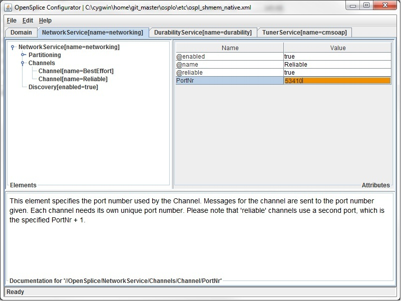
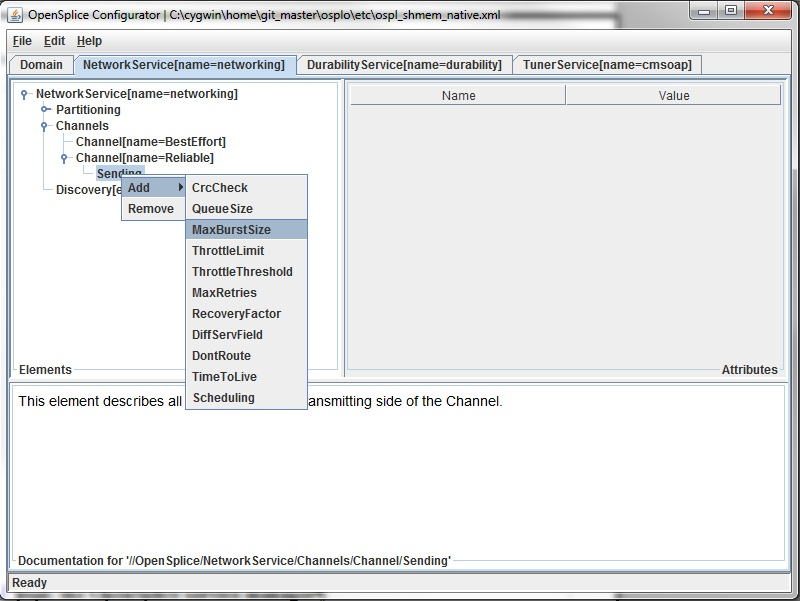
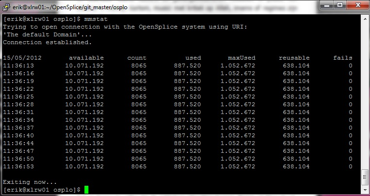
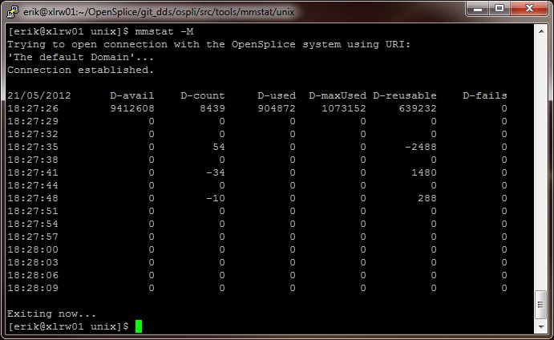
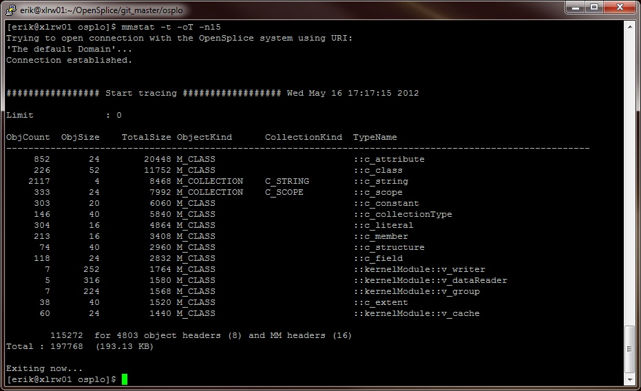
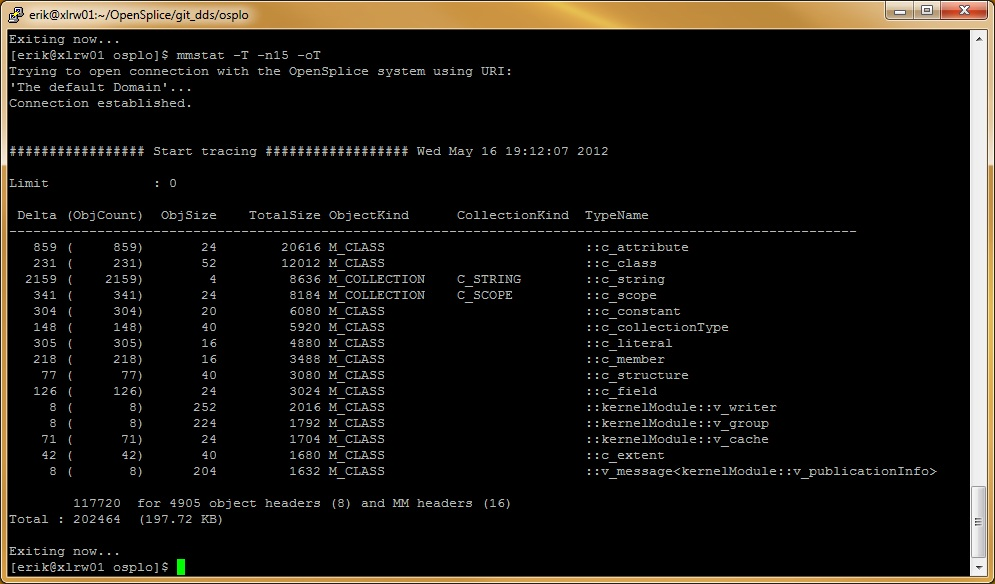

11. Tools¶
The Vortex OpenSplice distribution contains several tools for a variety of different purposes. This chapter categorizes the various tools and gives some background about each of them. For each tool it either refers to the appropriate manual, or provides a separate section with a detailed description of the tools’ possibilities and command-line interface.
11.1. Introduction¶
The Vortex OpenSplice tool chain is comprised of the following categories:
- Compilers/Code generators:
- idlpp (IDL Pre-processor): Parses and validates an IDL file containing your DCPS data model. When valid, it generates a language specific representation of this data model accompanied by the corresponding DCPS accessor classes (e.g. DataReader, DataWriter and TypeSupport). More details about this tool can be found in the IDL Pre-processor Guide contained in the file OpenSplice_PreProcessor_usermanual.pdf.
- rmipp (RMI pre-processor): Parses and validates an IDL file containing your RMI interface model. When valid, it generates a language-specific representation of this interface accompanied by the corresponding RMI-DDS translators. More details about this tool can be found in section 3.4 of the OpenSplice RMI over DDS Getting Started Guide contained in the file OpenSplice_RMI_GettingStarted.pdf.
- Configuration Editor:
- osplconf (OpenSplice Configurator): A GUI-based editor for the Vortex OpenSplice configuration files, providing context sensitive validation and help. More details about this tool can be found in osplconf: the OpenSplice Configuration editor.
- Control & Monitoring Tools:
- ospl (OpenSplice service manager): A tool that can be used to start, stop and monitor the Vortex OpenSplice Domain Service (only applicable to the Federated Deployment Mode). More details about this tool can be found in ospl: the OpenSplice service manager.
- mmstat (Memory Management Statistics): A tool that can display several statistics about the shared memory that is currently being used by an OpenSplice Domain Service (only applicable to the Federated Deployment Mode). More details about this tool can be found in mmstat: Memory Management Statistics.
- ospltun (OpenSplice Tuner): A tool that can be used to monitor and control individual DCPS entities. With this tool you can display the DCPS Entity trees of your application, watch (and possibly modify) the Qos settings of an individual DCPS entity, monitor the status flags it has currently raised, examine many more statistics about these entities, and even monitor and inject samples into your DCPS Readers/Writers. It can connect directly into the shared memory (restricted to the Federated Deployment Mode), or through a socket to a pre-configured Tuner Service using the SOAP protocol. More details about this tool can be found in the OpenSplice Tuner Guide contained in the file OpenSplice_Tuner_usermanual.pdf.
- ospltest (OpenSplice Tester): An automated testing and debugging tool that can be used to receive and display messages produced in OpenSplice, and to transmit your own messages either manually or with a script. Like the Tuner, it can connect directly to the shared memory (restricted to the Federated Deployment Mode), or through a socket to a pre-configured Tuner Service using the SOAP protocol. More details about this tool can be found in the OpenSplice Automated Testing and Debugging Tool User Guide contained in the file OpenSplice_TesterUserGuide.pdf.
- nodemon (OpenSplice Node Monitor): A tool that publishes the following system-monitoring data into the OpenSplice backbone. More details about this tool can be found in the OpenSplice Node Monitor User Guide contained in the file OpenSplice_TNodeMonitorGuide.pdf.
The following sections will provide some more details about those tools that do not have a separate manual.
11.2. osplconf: the OpenSplice Configuration editor¶
The OpenSplice Configuration Editor provides the following command line instruction:
-uri=[URI] — specifies the domain config file that needs to be opened
e.g. osplconf -uri=$OSPL_URI
When started, the OpenSplice Configuration Editor can help you in several ways to tailor the deployment settings for your Vortex OpenSplice system:
- It displays the configured services as separate tabs in a tabbed pane.
- For each service, it displays the relevant service settings in a hierarchical tree.
- For each setting, it provides a context-sensitive description in the bottom pane. The content of this context-sensitive help is identical to the textual descriptions contained in the Configuration section. These descriptions also give some additional information, such as the unit of an attribute (e.g. Bytes per resolution tick).
- The value of each element/attribute can be edited.
- A context-sensitive validation algorithm will check whether your input
satisfies the relevant criteria.
- When the input color is orange, you are editing the value.
- When the text field color is red, the value is unacceptable.
- When the text field color is white, the new input value has been accepted.
A typical view of the OpenSplice Configurator is displayed below:
Typical Configurator view
{kind=link}
A config file is opened using the top menu bar (File > Open) or the keyboard shortcut Ctrl+O.
The appropriate service tab is selected.
If the appropriate service is not configured, and so its tab is not visible on the top, it can be added by using the top menu-bar (Edit > Add Service).
The hierarchical tree on the left can be used to browse through the settings applicable to the Service and possibly modify them.
The right pane shows the settings of the currently selected tree node. An item prefixed with a ‘@’ represents an XML attribute. The other items represent XML elements.
If the appropriate setting is not currently configured, and therefore not visible in the tree, you can add it by right-clicking anywhere in the tree to open a context-sensitive sub-menu displaying all available settings for that particular element in the tree.
Adding an element in Configurator
{kind=link}
Once the appropriate modifications have been made, and are accepted by the Configurator, the config file can be saved using the top menu bar (File > Save) or the keyboard shortcut Ctrl+S.
Likewise, a config file can be written from scratch by using the top menu bar (File > New) or the keyboard shortcut Ctrl+N.
11.3. ospl: the OpenSplice service manager¶
The OpenSplice service manager (ospl) is a tool that monitors and controls the lifecycle of the OpenSplice Domain Service (spliced), which in turn monitors and controls all other OpenSplice services. This tool is only applicable to the Federated Deployment Mode, because the Single Process Deployment Mode doesn’t need to run external services. Basically you can view the OpenSplice service manager as a controller around the OpenSplice Domain Service, that can be used to pass the following command-line instructions to the Domain Service:
- start [URI] — Starts a Domain Service for the specified URI
(It looks for the environment variable OSPL_URI when no URI is explicitly passed.) The Domain Service will in turn parse the config file indicated by the URI and start all configured services according to their settings.
When done, the OpenSplice service manager will return one of the following exit codes:
0 : normal termination (when the Domain Service has successfully started)
1 : a recoverable error has occurred (e.g. out of resources)
2 : an unrecoverable error has occurred (e.g. config file contains errors).
When also passing the -f flag, the OpenSplice service manager will not return the command prompt, but remain blocked until the Domain Service successfully terminates. Any termination event sent to the service manager will in that case be forwarded to the Domain Service it manages.
- stop [URI] — Stops the Domain Service for the specified URI
(It looks for the environment variable OSPL_URI when no URI is explicitly passed.) The Domain Service will in turn wait for all the services it currently monitors to terminate gracefully and will then terminate itself.
When done, the OpenSplice service manager will return one of the following exit codes:
0 : normal termination when the Domain Service has successfully terminated.
2 : an unrecoverable error has occurred (e.g. config file cannot be resolved).
When passing the -a flag instead of a URI, the OpenSplice manager is instructed to terminate all Domain Services that are currently running on the local node.
- status [URI] — Prints the status of the Domain Service for the specified URI
- (It looks for the environment variable OSPL_URI when no URI is explicitly passed.) When a Domain with the specified URI cannot be found, it prints nothing.
- list — Lists all Domain Services by name
- (i.e. the name configured in the OpenSplice/Domain/Name element of the config file). This behaviour is similar to the status option, but then for all Domains that are currently running on the local node.
There are a couple of other flags that can be used to display valuable information:
-v — prints the version number of the current OpenSplice release.
-h — prints help for all command-line options.
Note that the default behaviour of ospl without any command-line arguments is to display help.
11.4. mmstat: Memory Management Statistics¶
Mmstat is a command-line tool that can display valuable information about the shared memory statistics of an OpenSplice Domain (this is only applicable to the Federated Deployment Mode, since the Single Process Deployment Mode does not use shared memory). The Domain to which mmstat must attach can be passed as a command-line parameter, and consists of a URI to the config file specifying the Domain. When no URI is passed, mmstat will attach to the Domain specified in the environment variable OSPL_URI.
Basically mmstat can run in four separate modes, which all display their status at regular intervals. This interval time is by default set to 3 seconds, but can be overruled by passing the -i flag followed by an interval value specified in milliseconds.
The following modes can be distinguished using the specified flags:
-m — The memory statistics mode (default mode)
-M — The memory statistics difference mode
-t — The meta-object references mode
-T — The meta-object references difference mode
Mmstat will keep on displaying an updated status after every interval until the q key is pressed, or until the total number of iterations reaches the sample_count limit that can be specified by passing the -s flag followed by the preferred number of iterations. Intermediate status updates can be enforced by pressing the t key.
The following subsections provide detailed descriptions of the different mmstat modes mentioned above.
11.4.1. The memory statistics mode¶
In the memory statistics mode mmstat basically displays some general shared memory statistics that can help in correctly estimating the required size of the shared memory database in the configuration file.
The numbers that will be displayed in this mode are:
- the total amount of shared memory still available (i.e. currently not in use).
- the number of objects currently allocated in the shared memory.
- the amount of shared memory that is currently in use by the allocated objects.
- the worstcase amount of shared memory that has been in use so far.
- the amount of shared memory that is currently marked as reuasble. (Reusable memory is memory that is conceptually available, but it might be fragmented in small chunks that cannot be allocated in bigger chunks.)
The memory statistics mode is the default mode for mmstat, and it is selected when no explicit mode selection argument is passed. It can also be selected explicitly by passing the -m flag.
Typical mmstat view
{kind=link}
11.4.2. The memory statistics difference mode¶
The memory statistics difference mode works very similarly to the memory statistics mode, but instead of displaying the current values of each measurement it displays the changes of each value relative to the previous measurement. This provides a good overview of the dynamics of your shared memory, such as whether it remains stable, whether it is rapidly being consumed/released, and so on.
Mmstat memory statistics difference mode
{kind=link}
The numbers that will be displayed in this mode are:
- the difference in the amount of available shared memory relative to the previous measurement.
- the difference in the number of objects that is allocated in the shared memory relative to the previous measurement.
- the difference in the amount of shared memory that is in use by the allocated objects relative to the previous measurement.
- the difference in the worstcase amount of shared memory that has been allocated since the previous measurement. Notice that this value can only go up and so the difference can never be negative.
The memory statistics difference mode can be selected by explicitly passing the -M flag as a command-line parameter.
11.4.3. The meta-object references mode¶
In the meta-object references mode mmstat basically displays which objects are currently populating the shared memory.
Mmstat meta-object references mode
{kind=link}
For this purpose it will iterate through all datatypes known to the Domain, and for each datatype it will display the following information:
- the number of objects currently allocated for the indicated type.
- the memory allocation footprint of a single object of the indicated type.
- the combined size taken by all objects of the indicated type.
- The kind of object (e.g. class, collection, etc.).
- The kind of collection (when appropriate).
- The fully scoped typename.
In normal circumstances the reference list will be so long (only the bootstrap will already inject hundreds of types into the Domain) that it will not fit on one screen. For that reason there are several ways to restrict the number of items that are displayed, by filtering out the non-interesting items:
A filter can be specified by passing the -f flag, followed by a (partial) typename. This restricts the list to the only those datatypes that match the filter.
The maximum number of items that may be displayed can be specified by passing the -n flag, followed by the maximum value.
This is especially useful when combined with another flag that determines the order in which the items will be displayed. For example, when the items are sorted by memory footprint, passing -n10 will only display the top ten datatypes that have the biggest footprint.
The order of the items in the list can be controlled by passing the -o flag, followed by a character specifying the ordering criterion. The following characters are supported:
C — Sort by object Count (i.e. the number of allocated objects from the indicated datatype).
S — Sort by object Size (i.e. the memory footprint of a single object from the indicated datatype).
T — Sort by Total size (i.e. the combined memory footprint of all objects allocated from the indicated datatype).
11.4.4. The meta-object references difference mode¶
The meta-object references difference mode is very similar to the meta-object references mode, but instead of displaying the current values of each measurement it displays the changes of each value relative to the previous measurement. This provides a good overview of the dynamics of your shared memory, such as whether the number of objects remains stable, whether it is rapidly increasing/decreasing, and so on.
The fields that are displayed in this mode are similar to the fields displayed in the meta-object references mode, except that the numbers displayed in the first and third column are now specifying the changes relative to the previous measurement.
All the flags that are applicable to the meta-object references mode are also applicable to the meta-object references difference mode, but keep in mind that ordering (when specified) is now based on the absolute value of the difference between the current and the previous measurement. This way big negative changes will still be displayed at the top of the list.
Mmstat meta-object references difference mode
{kind=link}